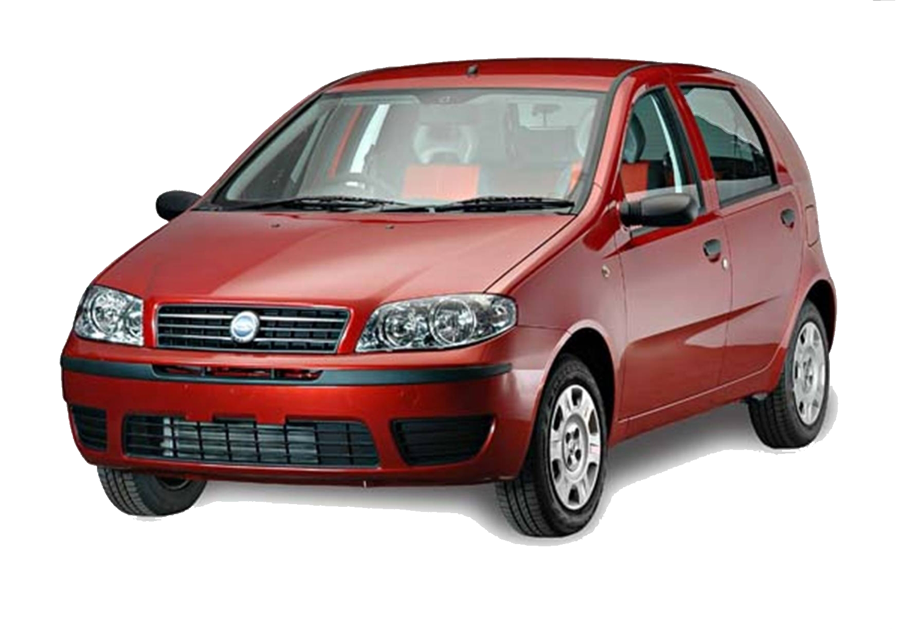
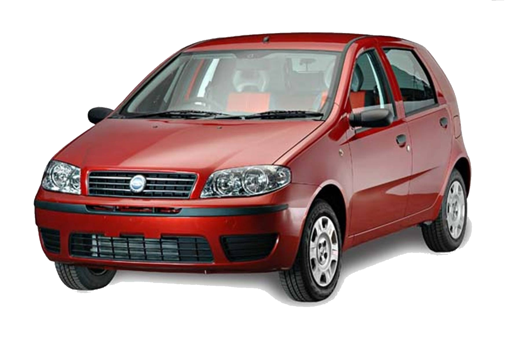

Zastava 10
Poslednji model ikada proizveden
Fabrika je počela sa proizvodnjom 1940. godine, kada je za potrebe Jugoslovenske vojske proizvedeno 400 kamiona „ševrolet“. Proizvodnja je nastavljena 1953. godine kada je u kragujevačkoj fabrici ukupno proizvedeno 162 vozila. Bili su to džipovi marke „vilis overland”. Ugovor o otkupu licence sa Fijatom potpisan je 12. avgusta 1954. godine, a tri meseca kasnije počela je montaža prvih vozila modela "AR-55","1400 BJ" i "1100 B". Proizvodnja automobila „zastava 750", popularnijeg pod nazivom „fića“ počela je 1955, a prestala je 30 godina kasnije. „Fića“ je razvijen na bazi "fijata 600 D", sa motorima od 600 i 750 kubika. „Fića“ odigrao je presudnu ulogu u razvoju automobilske industrije u tadašnjoj Jugoslaviji. Ukupno je proizvedeno 923.487 „fića“. Između 1960. i 1962. Zastava je proizvela 613 primeraka Fijata 1800/2100/2300, kao zamenu za zastareli model 1400 BJ. Pored „fiće“ Zastava je od 1961. godine počela da proizvodi i "zastavu 1300" (popularnog "tristaća") na osnovu italijanskog „Fijata 1300". Ukupno je do 20. decembra 1979. godine proizvedeno 201.160 „tristaća“. Godine 1968. proizvodni kapaciteti fabrike prošireni su na 85.000 vozila godišnje. Time je završena prva faza razvoja ove fabrike automobila. Tada je Zastava imala sedam fabrika, pet u Kragujevcu i po jednu u Makedoniji i na Kosmetu. Godine 1961. Zastava u okviru svoje fabrike automobila počinje proizvodnju po licenci lakog kamiona Fiat 615, a godinu dana kasnije i samostalno razvijene verzije Zastava 620B koja je bila dostupna sa različitim nadgradnjama, shodno nameni. Proizvodnja prvog sopstvenog vozila srednje klase, „zastave 101" počela je 15. oktobra 1971. godine i u nešto izmenjenom izdanju proizvodio se do 2008. Milioniti „kec“ proizveden je 1991. godine, a rekordna godišnja proizvodnja bila je 1979. kada je sa montažnih traka sišlo 88.918 „stojadina“. Serijska proizvodnja "zastave 128" popularne "osmice" počela je 1980. Ukupno je proizvedeno oko 230.000 ovih vozila. „Zastava 128" izvozila se u rasklopljenom stanju u Egipat a izvoz je posle višegodišnjeg zastoja ponovo obnovljen februara 2006. sa kontingentom od 480 „osmica“. Prvi automobil razvijen potpuno samostalno bio je „jugo 45", izrađen je ručno 2. oktobra 1980. godine. „Jugo“ se u dosadašnjem periodu proizvodnje proizvodio sa motorima snage od 45, 55, 60 i 65 konjskih snaga, zapremine od 1000 i 1100 kubika. „Jugo“, inače pored „fiće“ najpopularniji Zastavin model u nešto izmenjenom izdanju proizvodi se do 2008. pod imenom „koral 1.1“ i „koral in“. „Jugo“ je jedini Zastavin model koji ima i kabriolet verziju. Do 2000. godine proizvedeno je više od 750.000 ovih vozila. Ovaj automobil se između ostalog izvozio i u SAD. Prvi „jugo 55 GV“ za izvoz u SAD proizveden je 9. septembra 1985. godine a ukupno je u ovu zemlju izvezeno 141.511 „juga“. Model "florida" javnosti je prvi put predstavljen 1987. godine a prvi ovakav automobil sišao je sa montažnih traka 2. oktobra 1988. godine i proizvodio se sve do 2008. Poslednji modeli „floride“ proizvodili su se pod imenom „florida in“ sa motorom zapremine 1300 kubika. Do 2000. godine proizvedeno je tek negde oko 25.000 „florida“. Postojala je i verzija floride sa Pežoovim dizel motorom zapremine 1.4 litara. Od 1988. do 1994. godine u Zastavi se proizvodio i jugo „uno“ baziran na istoimenom „fijatovom“ modelu i u tom periodu kragujevačka fabrika proizvela je svega 2.620 ovih vozila. Rekordna je bila 1989. godina kada je u sopstvenom proizvodnom programu i industrijskoj korporaciji proizvedeno 220.000 vozila. Zastava je tada imala 53.337 zaposlenih a u njenu proizvodnju bilo je uključeno 280 preduzeća iz 130 gradova tadašnje Jugoslavije. Raspad SFRJ i ekonomske sankcije međunarodne zajednice, u periodu od 1992. do 1995. godine predstavljaju najteži period u istoriji kragujevačke fabrike automobila. U cilju stvaranja mešovitog preduzeća kroz saradnju sa nekim većim proizvođačem automobila, Zastava aktivno pregovara sa nekoliko svetskih proizvođača, među kojima su francuski PSA i Reno, kao i južnokorejski Daevu. Konačno se koncentriše na pregovore za proizvodnju novog modela marke Pežo. Posle višegodišnje stagnacije, 1998. godine dolazi do postepenog oživljavanja proizvodnje i prodaje, međutim takav trend, kao i predviđeno potpisivanje ugovora sa Pežoom, zaustavljeni su 1999. godine kada je u bombardovanju razrušeno gotovo 160.000 m² proizvodnih površina. Septembra iste godine na obnovljenim proizvodnim linijama sa traka silaze prvi automobili kada je obnovljen i proizvodni kapacitet od 50.000 automobila godišnje. Taj obim proizvodnje do danas nije postignut. Zastava danas proizvodi oko 10.000 vozila godišnje i još uvek je najprodavaniji automobil u Srbiji. Osim automobila sa lokalno proizvedenim motorima, sa Zastavinih traka silaze i Zastavini modeli sa Pežoovim motorima, a u toku je i razvoj projekta modela Florida sa Pežoovim dizel-motorom. Nova nada za oporavak fabrike je ugovor sa „Fijatom“ potisan 2005. godine o sklapanju i osvajanju proizvodnje modela "punto" pod nazivom "zastava 10". Dženeral motors i Zastava su 2007. potpisali su ugovor o sklapanju Opel astre u Kragujevcu. Zastava je do danas proizvela više od 4.100.000 vozila od kojih je 650.000 izvezla u 76 zemalja sveta. Zastava 21. novembra 2008. godine prestaje da postoji, ime se menja u FAS (Fijat automobili Srbija), prekinuta je proizvodnja Zastavinih modela.
Poslednji model ikada proizveden
